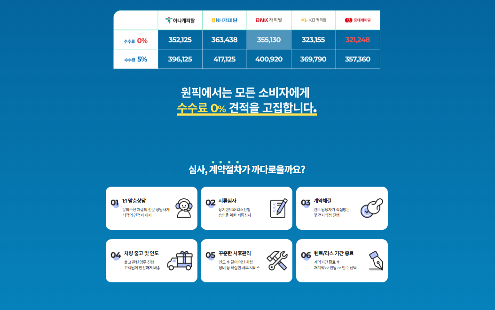
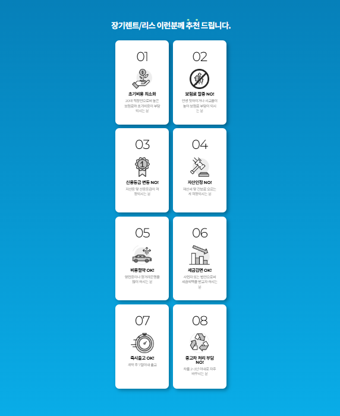
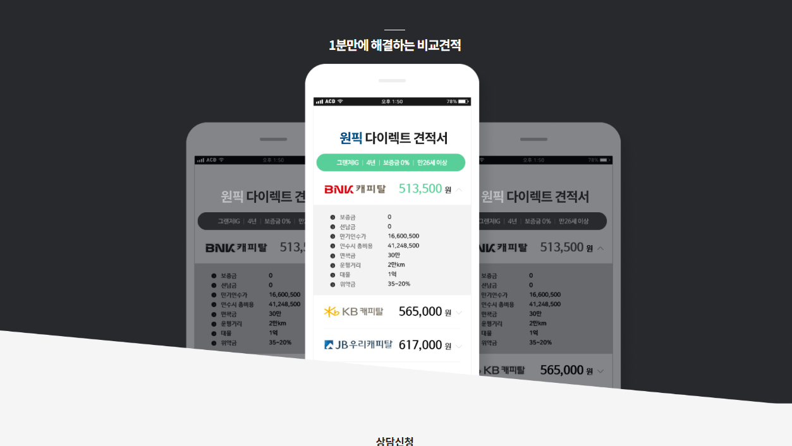

원픽 장기렌트카를 통해 신차 장기렌트나 자동차 리스를 알아볼 때는 원하는 차량과 이용방식을 먼저 정리해야 합니다. 가장 저렴해 보이는 월 납입금도 선납금이 포함되거나 약정주행거리가 짧고 정비가 제외된 조건일 수 있습니다. 계약 전에는 차량가격뿐 아니라 계약기간 전체에 걸쳐 납부할 금액과 사고·정비·중도해지·계약 종료 시 비용을 함께 비교하는 것이 중요합니다.
같은 조건으로 비교견적을 맞추는 방법
원픽 장기렌트카 견적을 볼 때는 모든 비교안의 차량 연식과 트림, 옵션, 계약기간, 주행거리와 초기비용을 동일하게 맞춰야 합니다. 한쪽은 선납금이 포함되고 다른 쪽은 무보증이라면 월 납입액만 비교해서는 실제 차이를 알기 어렵습니다.

최저가보다 총비용을 보는 방법
가장 낮은 월 렌트료는 눈에 잘 띄지만 계약 전체 기간 동안 납부할 총액과 초기 선납금, 종료 시 인수금액까지 더해야 실제 부담을 비교할 수 있습니다. 정비상품이나 보험 자기부담금이 다른 경우 예상 유지비도 함께 계산하는 것이 좋습니다.
서비스를 알아보기 전에 먼저 정할 것
장기렌트나 자동차 리스를 알아볼 때는 브랜드명이나 광고에 표시된 월 납입금부터 보기보다 원하는 차종과 트림, 필수 옵션, 예상 계약기간, 연간 주행거리와 초기비용 한도를 먼저 정하는 것이 좋습니다. 조건이 정리되지 않으면 서로 다른 상품을 비교하게 되어 가장 저렴한 견적을 찾기 어렵습니다.
장기렌트와 자동차 리스의 기본 차이
장기렌트는 일반적으로 렌터카 회사 명의의 차량을 계약기간 동안 이용하며 자동차세와 보험 관련 비용이 월 렌트료에 반영되는 구조가 많습니다. 자동차 리스는 금융상품의 성격이 강하고 보험 가입 방식과 번호판, 계약 종료 처리 등이 다를 수 있습니다. 어느 방식이 더 유리한지는 이용자의 보험경력, 사업상 비용처리, 주행거리와 차량 교체주기에 따라 달라집니다.
차량과 옵션을 정확하게 맞추는 방법
같은 모델명이라도 연식과 트림, 엔진과 구동방식, 안전·편의 옵션에 따라 차량가격과 월 납입금이 달라집니다. 견적을 요청할 때는 제조사, 모델, 세부트림, 외장색상과 필수 옵션을 구체적으로 적어야 합니다. 재고차와 주문차의 출고시점도 다를 수 있으므로 빠른 출고가 중요한지, 원하는 옵션이 더 중요한지도 함께 정해야 합니다.

월 렌트료를 구성하는 항목
월 렌트료는 차량가격을 계약개월로 단순히 나눈 금액이 아닙니다. 계약기간, 예상 잔존가치, 약정주행거리, 보험조건, 정비 포함 여부, 보증금과 선납금, 렌터카 회사의 상품조건 등이 반영될 수 있습니다. 월 납입액이 낮더라도 초기 선납금이나 종료 시 인수금액이 높다면 총비용은 커질 수 있습니다.
| 구분 | 확인 내용 | 주의점 |
|---|---|---|
| 무보증 | 큰 초기 납입금 없이 진행 | 심사와 월 납입액 확인 |
| 보증금 | 계약 종료 후 정산·반환 가능 | 반환조건 확인 |
| 선납금 | 렌트료 일부를 미리 지급 | 일반적으로 반환되지 않음 |
보증금·선납금·무보증 차이
보증금은 계약 이행을 위해 맡기는 예치금으로 종료 후 미납금과 손상비용 등을 정산한 뒤 반환될 수 있습니다. 선납금은 월 렌트료 일부를 미리 납부하는 금액으로 월 납입액을 낮춰 보이게 하지만 일반적으로 반환되지 않습니다. 무보증은 큰 초기 납입금 없이 진행하는 방식이지만 심사결과에 따라 승인 여부나 월 렌트료가 달라질 수 있습니다.
계약기간과 약정주행거리
계약기간이 길어지면 월 납입금이 낮아질 수 있지만 차량이 필요 없어져도 중도해지가 쉽지 않을 수 있습니다. 약정주행거리는 출퇴근과 주말 이동, 장거리 여행과 업무용 운행을 합산해 정해야 합니다. 실제 주행거리가 약정을 초과하면 계약 종료 시 추가 정산이 발생할 수 있으므로 현재 주행량보다 지나치게 낮게 설정하지 않는 편이 안전합니다.
보험조건과 사고 시 확인사항
장기렌트는 렌터카 회사가 정한 보험조건이 적용될 수 있습니다. 대인·대물 보장뿐 아니라 운전자 연령, 가족과 직원 등 추가운전자 범위, 자차손해 자기부담금과 사고 시 대차 여부를 확인해야 합니다. 등록되지 않은 운전자가 운전하거나 계약조건을 위반하면 사고처리에서 불이익이 생길 수 있습니다.

정비 포함 상품을 고르는 기준
정비상품은 엔진오일과 필터, 타이어와 브레이크 패드 등 소모품 관리범위에 따라 구성이 달라질 수 있습니다. 차량관리를 직접 하기 어렵거나 업무용으로 주행량이 많다면 정비 포함 상품이 편리할 수 있습니다. 반대로 주행량이 적고 직접 관리할 수 있다면 정비 미포함 견적과 총비용을 비교하는 것이 좋습니다.
개인·개인사업자·법인의 확인사항
개인은 초기비용과 월 예산, 보험 편의성과 차량 교체주기를 중심으로 볼 수 있습니다. 개인사업자와 법인은 업무용 사용비율과 운행기록, 회계·세무처리를 함께 확인해야 합니다. 월 렌트료가 모두 비용으로 인정된다고 단정하지 말고 차량 종류와 실제 업무 사용에 따른 처리기준을 전문가에게 확인하는 것이 좋습니다.
초기 납입금과 총 납부액, 보험·정비, 중도해지와 종료 시 정산금까지 확인해야 실제 부담을 비교할 수 있습니다.
중도해지와 계약승계
장기계약은 중간에 해지할 경우 위약금이 발생할 수 있습니다. 위약금은 남은 계약기간과 상품조건에 따라 달라질 수 있으며 계약 초기일수록 부담이 클 수 있습니다. 계약승계가 가능한 상품도 있지만 새 이용자의 심사와 렌터카 회사의 승인이 필요하고 별도 수수료가 발생할 수 있으므로 계약 전에 확인해야 합니다.
계약 종료 시 반납과 인수
계약 종료 시 차량을 반납할지 인수할지 결정하게 됩니다. 반납을 선택하면 외관손상과 사고수리, 초과주행에 따른 정산기준을 확인해야 합니다. 인수를 고려한다면 계약서의 인수금액과 취득 관련 비용, 같은 연식과 주행거리의 중고차 시세를 비교해야 합니다.
최종 견적 비교 체크리스트
최종적으로는 차량 연식·트림·옵션, 계약기간과 약정주행거리, 보증금·선납금, 월 납입액의 부가세 포함 여부, 보험과 정비 범위, 중도해지 위약금, 계약 종료 시 인수금액을 한 표에 놓고 비교하는 것이 좋습니다. 상담 중 구두로 들은 조건도 계약서와 견적서에 동일하게 표시되어 있는지 확인해야 합니다.

원픽 장기렌트카 견적을 구체적으로 비교하고 싶다면
희망 차종과 트림, 옵션, 계약기간과 주행거리, 초기비용 조건을 정리한 뒤 상담 정보를 확인해보세요.
원픽 장기렌트카 무료견적 신청